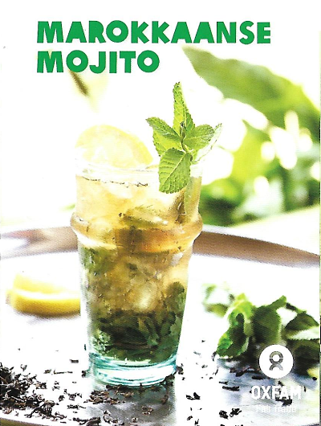

Recepten
Hier vind je alvast een zeer klein voorproefje van de vele recepten die jij thuis ineen kan steken met onze Oxfam Fair Trade producten. Vind er nog velen meer op de Oxfam website.
Gebruik de recepten, hier of op de oxfam site, voor uw volgend feest of evenement. Bekijk ook zeker onze verenigingen pagina, indien u interesse heeft in bestellen met consignatie.

Marokkaanse Mojito
Tijdsduur: 30 minuten
Voor 4 personen
Instructies
Plaats de losse thee en de gekneusde kardemompeulen in een theepot en overgiet met 200ml kokend water. Laat de thee 15 minuten trekken. Verwijder de thee en peulen en laat afkoelen.
Kneus 3/4 van de verse munt, samen met de suiker. Voeg het limoen- en citroensap toe zodat de suiker oplost.
Voeg de thee bij het muntmengsel, meng en giet door een vergiet. Voeg de witte en donkere rum toe, evenals het rozenwater.
Vul vier glazen met ijs en de resterende verse muntblaadjes. Verdeel de cocktail over de vier glazen en vul aan met spuitwater.

Tropische Ananas-Sangria
Tijdsduur: 30 minuten + 3 uur rusten
Voor 4 personen
Instructies
Voeg alle ingrediënten samen, met uitzondering van het spuitwater. Laat minstens 3 uur trekken in de koelkast. Serveer met ijs en eventueel een scheutje spuitwater.